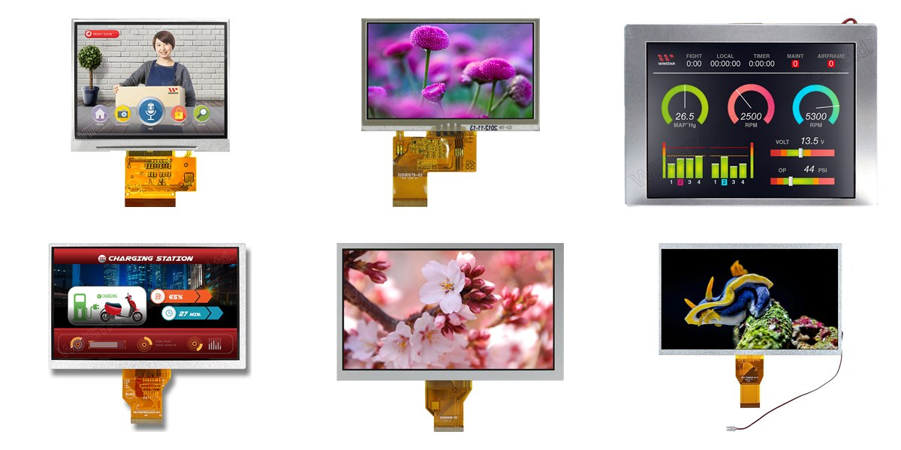

Standard TFT LCD Technology
Full colour TFT LCD modules from 1.77" to 10.1", from 128 x 160 to 1024 x 600 pixels. Find out how a TFT works, what viewing direction means, and how to choose an interface and touch panel.
Full colour TFT LCD modules from 1.77" to 10.1", from 128 x 160 to 1024 x 600 pixels. Find out how a TFT works, what viewing direction means, and how to choose an interface and touch panel.

A TFT (Thin Film Transistor) LCD is an active matrix colour display. Every red, green and blue sub-pixel has its own tiny transistor that switches it on and holds its level until the next refresh, giving sharp, bright, full colour images with fast response. TFT has become the standard display for embedded products, from handheld instruments to industrial control panels.
As the authorised distributor for Winstar Display Corporation we offer more than 50 standard TFT modules from 1.77" to 8", plus a 10.1" model, with SPI, MCU, 8080, RGB and LVDS interfaces. Many sizes are available without touch, with a resistive touch panel (RTP) or with projected capacitive touch (PCAP), and some include a controller board or power board. Low minimum order quantities and long-term availability make them ideal for design-in to industrial products.
Sizes from 1.77" to 10.1"
Resolutions from 128 x 160 to 1024 x 600
SPI, MCU, 8080, RGB and LVDS interfaces
No touch, resistive or capacitive touch
Brightness up to 900 cd/m²
−20 to +70°C operating temperature
A TFT panel is a sandwich of two glass plates with a thin layer of liquid crystal between them. The rear glass carries a grid of thin film transistors, one for every sub-pixel, with row (gate) and column (source) lines. The front glass carries a colour filter with red, green and blue stripes. Polarisers sit on the outside of both plates, and an LED backlight shines through from behind.
The driver IC scans the panel one row at a time, switching on that row's transistors and loading a voltage into each sub-pixel. The voltage twists the liquid crystal by a set amount, controlling how much backlight passes through the colour filter. Mixing the three sub-pixel levels creates each pixel's colour, and because every transistor holds its charge between scans, the image is stable and flicker free.
Simplified illustration, not to scale
Why designers choose a standard Winstar TFT module for embedded and industrial products
Up to 16.7 million colours with fast response, ideal for graphical user interfaces, icons, gauges, photos and video.
TN based standard panels give the lowest cost per inch of any colour display, with low minimum order quantities.
SPI, MCU, 8080, RGB and LVDS, so you can match the display to anything from a small microcontroller to an embedded processor.
Many models come with a resistive touch panel or projected capacitive touch with up to 10 touch points, fitted and tested.
−20 to +70°C operating temperature on most models, with high brightness versions up to 900 cd/m².
A stable standard range suited to long product lifecycles, with customisation of cables, backlights and cover glass available.
Most standard TFTs use a TN (twisted nematic) panel. TN panels look their best from one direction: away from it, contrast and colour start to shift. The best direction is given as a clock position. A 6H (6 o'clock) panel is best viewed from slightly below, and a 12H (12 o'clock) panel from slightly above.
Pick the direction to suit how your product is mounted and viewed. Where the display will be seen from many angles, choose an O-TFT wide view model, or step up to an IPS TFT for the widest angles and best colour.
| TN (6H / 12H) | O-TFT | IPS | |
|---|---|---|---|
| Viewing angle | Best from one direction | Wide, all directions | Widest, all directions |
| Colour shift off-axis | Noticeable | Low | Very low |
| Response | Fast | Fast | Fast |
| Best suited to | Fixed viewing position | Viewed from several sides | Premium colour and image |
| Cost | Lowest | Small premium | Higher |
Small TFTs up to around 3.5" have a driver IC with built-in frame memory, so a microcontroller only needs to send changes over SPI or a parallel MCU / 8080 bus. Larger displays use an RGB interface, where the host streams every pixel continuously with sync and clock signals, and needs an LCD controller or a Winstar controller board.
The 1024 x 600 seven inch models and the 10.1" model use LVDS, which carries high resolution video over a few differential pairs and suits longer cable runs. Our engineers can help you match a display to your processor.
| Interface | Typical Sizes | Best Suited To |
|---|---|---|
| SPI | 1.77" to 3.5" | Low pin count, small MCUs |
| MCU / 8080 parallel | 1.77" to 3.5" | Faster updates using on-chip frame memory |
| RGB (16 / 18 / 24-bit) | 3.5" to 8" | Processors with an LCD controller |
| LVDS | 5.7" to 10.1" | Higher resolution, longer cables, low EMI |
A selection of popular standard TFT modules by size, resolution, driver IC and interface
| Model | Size | Resolution | Outline (mm) | Driver IC | Touch | Interface |
|---|---|---|---|---|---|---|
| WF18GTLAADNN0 | 1.77" | 128 x 160 | 34 x 45.83 | ST7735S | No | SPI |
| WF28ETLAJDNG0 | 2.8" | 240 x 320 | 50 x 69.2 | ILI9341 | PCAP | MCU |
| WF35RTIACDNNB | 3.5" | 320 x 240 | 76.84 x 63.84 | SSD2119 | No | SPI, MCU, RGB |
| WF43GTIAEDNT0 | 4.3" | 480 x 272 | 105.5 x 67.2 | ILI6480B | RTP | RGB |
| WF57WTLECDNN0 | 5.7" | 320 x 240 | 143.5 x 104.1 | HX8218 + HX8615 | No | RGB |
| WF70B4TIAGDNN0 | 7" | 800 x 480 | 165 x 100 | HX8264 + HX8664 | No | RGB |
| WF70A7TIAHLNB0 | 7" | 1024 x 600 | 202 x 135.5 | EK79001HE + EK73215BCGA | PCAP | LVDS |
| WF80BTIAGDNNC | 8" | 800 x 480 | 192.8 x 116.9 | EK9713 + EK73002 | No | RGB |
| DS-T101BAH-01 | 10.1" | 1024 x 600 | 235 x 143 | HX8282A11 + HX8696A | No | 6/8-bit LVDS |
Many models are also available with resistive (RTP) or projected capacitive (PCAP) touch.Compare all 53 models in the Selector Guide → View Standard TFT Displays →
Many standard TFTs are offered in three versions with the same panel and outline, so you can choose the right touch technology without changing the display. The touch option is shown by the letter near the end of the model number: N for no touch, T for resistive and G for capacitive.
The brightest and lowest cost option, for display-only products or designs using buttons, encoders or a separate keypad.
Pressure sensitive single touch that works with gloves, a stylus or any object. Low cost and simple to interface with a 4-wire touch controller.
Multi-touch with gestures (5 points on most models, up to 10 on some), a clear image and a durable glass surface, with an I2C touch controller.
For example, WF43VTIAEDNN0 (no touch), WF43VTIAEDNT0 (RTP) and WF43VTIAEDNGA (PCAP) share the same 4.3" panel. Filter by touch type in the Selector Guide →
Standard TFT modules bring colour graphics and touch control to a wide range of products
Machine controls, PLC terminals and process equipment with touch operation.
Patient monitors, infusion pumps and diagnostic equipment with clear colour readouts.
Handheld meters, analysers and bench instruments showing graphs and waveforms.
Charge points, inverters and battery systems with status screens and user menus.
Thermostats, security panels, coffee machines and white goods with touch interfaces.
Payment terminals, kiosks, vending and ticketing machines.
Our engineering team can help specify or develop a custom solution for your exact requirements.
Talk to Our Engineers